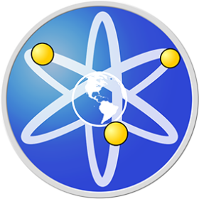

Recently i've been playing with the Godot game engine and BYOND, making micro games inspired by Ash K's works. They personally taught me alot about making games and using Godot, even going so far to mail me their old drawing tablet. which i couldnt be more thankful for.

BYOND is an oooold engine that was used to make MUD's in the 90s and early 2000's. Now its become much more advanced, creating feats like Space Station 13, which is detailed more on its own page. It uses its own language to program in called Dream Maker, or DM for short
I have a replit account with various scripts ive written for various scenarios. It can be found here The programs range from aremetical tools to virus's and other various things ive compiled from files on my personal computer. im still adding various programs ive made so its not a complete list yet